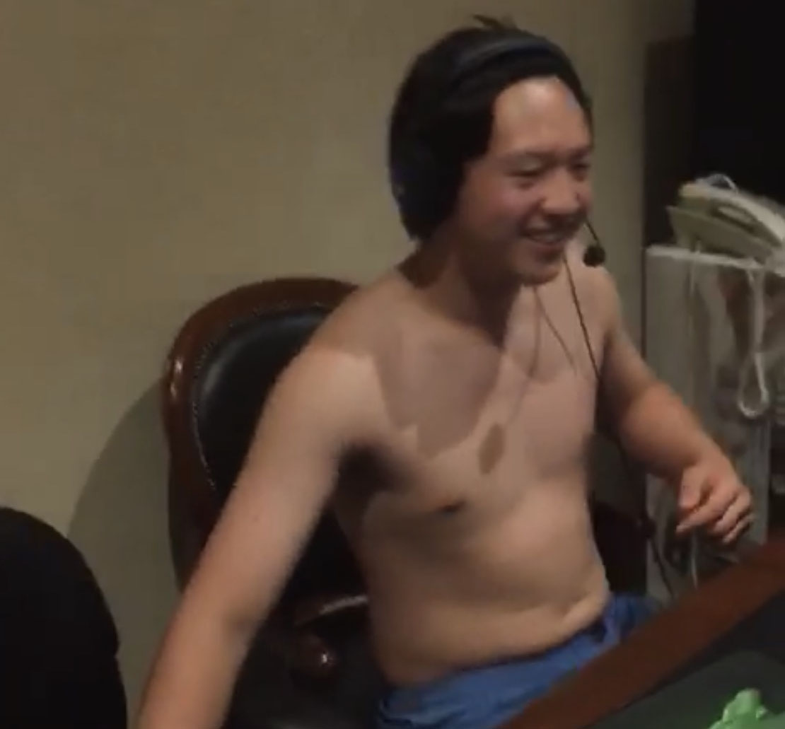
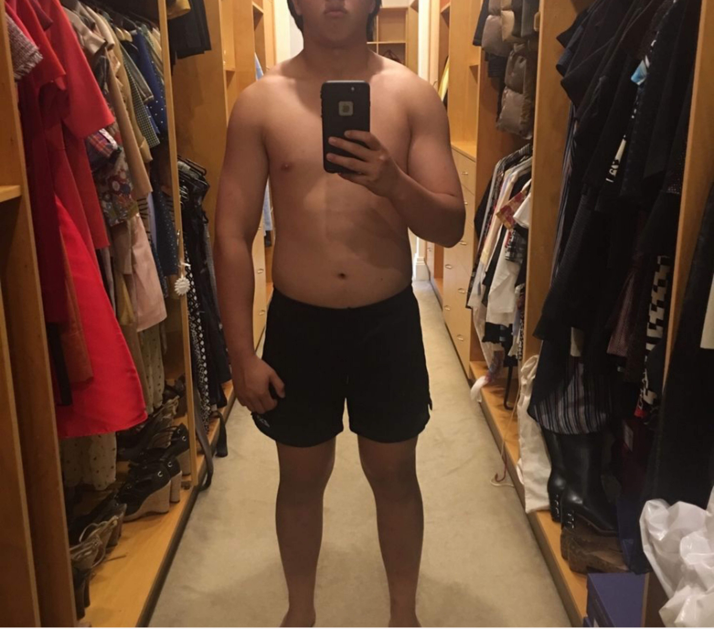
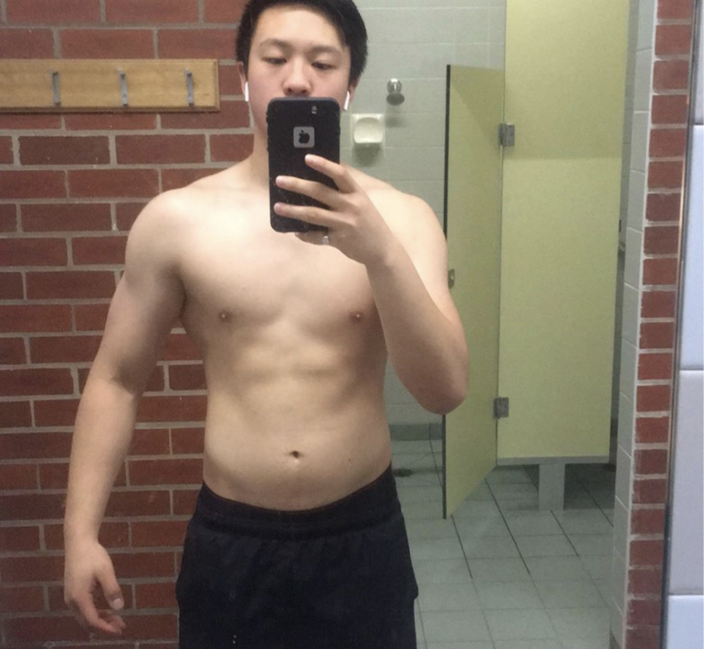

Preface
G'day, my name is Brandon Kasman Lau. I'm 19 years old and this is my fitness journey from the beginning until now. Let me preface that I do not reccomend others to use the methods that I have in changing my body compesistion as they are extreme and may have an effect on future health.
Act I: Rough Beginnings
I never really cared about the nutrition or going to the gym a couple of years ago. I never payed attention to all the junk that I ate. The picture below depicts this very clearly. I didn't have any motivation, goals or discipline.
 72kg, 17% Bodyfat. Circa December 2016I was diagnosed with a common disease called fuckerounditis.
At the time I played rugby and tennis but I wasn't necessarily good at either of these sports. I started my fitness journey doing calisthenics (bodyweight excercises) and although I made some progress and made marginal changes to my physique, I wasn't really happy with my progress, I wasn't exactly ripped or considered fit. To be honest, I had no reason for doing fitness. I had a major case of fuckerounditis.
In my sophmore year of highschool, my rugby coach told me I had potential to play for the varsity team. However, in order to qualify for my position (Prop) I had to change my body composition and meet certain strength goals. So then I had a goal, put on a shitload of weight and make strength progress in the gym
Act II: The Thiccening
 90kg, 23% Bodyfat. Circa June 2017With a goal requires a plan but more importantly perfect execution.
My plan was to gain 40 pounds within a 6 month time frame and along with that increase my bench press to 120kg, squat to 140kg and deadlift to 180kg. To execute this plan I ate 4000 calories and used a 5x5 strength based program.
In hindsight this wasn't really a good plan, 40 pounds within a 6 month time span is excessive and the fat gain wasn't optimal for general health or cardiovascular performance
Nevertheless, I achieved my weight and strength goals within this short time frame. After pasing the strength and skills test, I became a starting player on the Varsity Rugby team and my season was amazing to say the least until I got injured.
Act III: Coming out of hibernation
 80kg, 17% Bodyfat. Circa December 2017After a long rugby season I decided that enough was enough, I needed to lose the weight I gained over the year. Over 6 months I lost 10kg using a no-carb diet. Since I was at such a high body fat the dieting wasn't a problem for me. I shedded the fat like crazy
Act IV: Shredz
Now getting to this level of bodyfat was a challenge for me. It required an immaculate and consistent diet. Not to say that I didn't have the occasional cheat day :). As we approach December, I have started a lean bulk aiming to hit 81kg by next may. Goal is to maximise muscle gain whilst minimizing fat gains.
Final Words
Take this journey with a grain of salt. Don't replicate what I did in terms of weight gain because the efficiency of my gains was subpar to say the least. To start your fitness journey Click here to learn about gym programming.